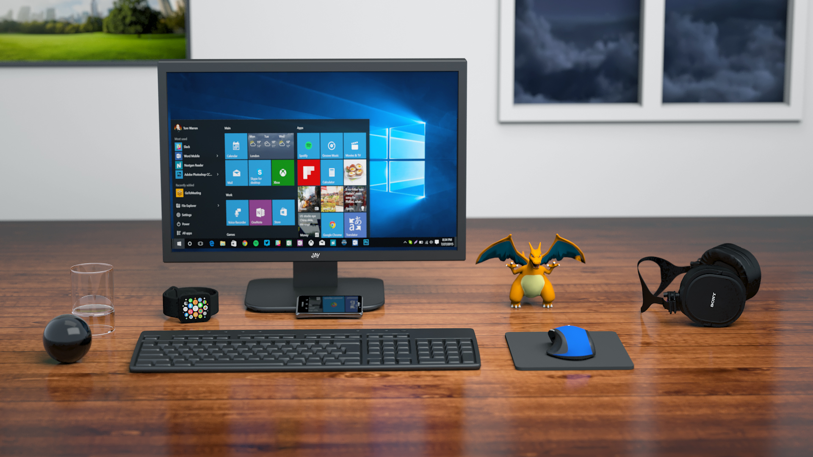

Design & Prototyping

Utilising Adobe XD public beta
Adobe's Experience Design software quickly allows the ability to wireframe mid-fidelity prototypes and create a flow that can be interacted with.
Adobe's Experience Design software quickly allows the ability to wireframe mid-fidelity prototypes and create a flow that can be interacted with.

Without access to analytics or server logs, some research can go a long way to helping
Without access to analytics or server logs, some research can go a long way to helping
By now you have probably worked out that my name is Mark, after all it is in the header and meta content for the page. I am at heart a full stack developer. That means that I enjoy all aspects of the web dev environment.
After a long stint working in warehousing, I went back into education and and currently working towards a BSc in Web Design & Development. Whilst studying, I developed an interest in more than just PHP and databases. Accessability and UX became stuck in my head. From thinking what was just common sense to a more thorough grasp of the reasoning behind certain actions. At the heart of everything I do, I now try to keep those aspects at the forefront.